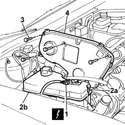
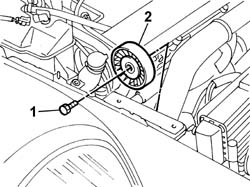
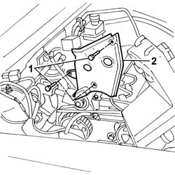

1032D12 Timing system protective COVER(S) - R.R.
- Path
- Procedures > 10 ENGINE > 1032 timing system > 1032D TIMING SYSTEM PROTECTION > 1032D12 Timing system protective COVER(S) - R.R.
- Kind
- repair procedure (removal / refitting; the operation number is the code)
- Applies to
- engines: 2.4 JTD 10V; all production periods
- Interactive page
- https://sloeber94.github.io/elrnDB-lThss/en/#/75763
Applies to: engines: 2.4 JTD 10V; all production periods
 Removing
Removing
 Refitting
Refitting- Position the vehicle on a lift.
- Open the boot and disconnect the negative battery terminal.
See in Op. 7040D50 ENGINE COMPARTMENT UPPER SOUND INSULATION SHIELD - R.R.
See in Op. 1016A10 SOUND-PROOFING COVER - R.R.
See in Op. 7055B54 PROTECTION/GUARD under engine - R.R.
See in Op. 4450B04 Right FRONT WHEEL (one) - R.R.
See in Op. 7055B42 FRONT WHEEL ARCH LINER (one), left or right - R.R.
See in Op. 7055B64 Engine compartment DUST SEAL in front wheel arch (one), left or right - R.R.
See in Op. 1092G10 Engine components single drive BELT - R.R.
1. Disconnect the electrical connection for the engine coolant level sensor.
 | Description | Connector |
|---|---|---|
1 | Engine coolant level sensor | K026 |
2. Undo the fixing bolt (2a) and move the engine coolant reservoir (2b) from the housing.
3. Undo the fixing bolts.
3. Remove the upper timing protective cover.

Applies to: engines: 2.4 JTD 10V; all production periods
1. Undo the fixing bolt.
2. Remove the auxiliary shaft drive belt fixed tensioner.

Applies to: engines: 2.4 JTD 10V; all production periods
1. Undo the lower fixing bolts.
2. Remove the lower section of the timing protective cover.

Applies to: engines: 2.4 JTD 10V; all production periods
Refitting
Removing- Fit the lower section of the protective cover and tighten the fixing bolts to the recommended torque.
 | Value - daNm | Fastening | Component | Ø |
|---|---|---|---|---|
. | 0.9 | Bolt | TIMING BELT PROTECTIVE COVER(S) | M6 |
- Fit the auxiliary shaft drive belt fixed tensioner and tighten the retaining bolt to torque.
| Value - daNm | Fastening | Component | Ø |
|---|---|---|---|---|
. | 2.5 | Bolt | SINGLE BELT FIXED TENSIONER VARIOUS | M8 |
- Fit the upper section of the protective cover tightening the fixing bolts to torque.
| Value - daNm | Fastening | Component | Ø |
|---|---|---|---|---|
. | 0.9 | Bolt | TIMING BELT PROTECTIVE COVER(S) | M6 |
- Place the engine coolant reservoir in position and tighten the fixing bolt.
- Connect the electrical connection for the engine coolant level sensor.
| Description | Connector |
|---|---|---|
. | Engine coolant level sensor | K026 |
See in Op. 1092G10 Engine components single drive BELT - R.R.
See in Op. 7055B64 Engine compartment DUST SEAL in front wheel arch (one), left or right - R.R.
See in Op. 7055A42 FRONT GRILLE (single) - R.R.
See in Op. 4450B04 Right FRONT WHEEL (one) - R.R.
See in Op. 7055B54 PROTECTION/GUARD under engine - R.R.
See in Op. 1016A10 SOUND-PROOFING COVER - R.R.
See in Op. 7040D50 ENGINE COMPARTMENT UPPER SOUND INSULATION SHIELD - R.R.
- Open the boot and connect the negative battery terminal.
- Remove the vehicle from the lift.
Topics linked from this page (8)
- 1016A10 SOUND-PROOFING COVER - R.R.
- 1092G10 Engine components single drive BELT - R.R.
- 4450B04 Right FRONT WHEEL (one) - R.R.
- 7040D50 ENGINE COMPARTMENT UPPER SOUND INSULATION SHIELD - R.R.
- 7055A42 FRONT GRILLE (single) - R.R.
- 7055B42 FRONT WHEEL ARCH LINER (one), left or right - R.R.
- 7055B54 PROTECTION/GUARD under engine - R.R.
- 7055B64 Engine compartment DUST SEAL in front wheel arch (one), left or right - R.R.
Topics that link to this page (12)
- 1016C10 SINGLE CYLINDER HEAD - R.R. and Replace gasket
- 1020D18 Front crankshaft COVER OIL SEAL - Replace
- 1032B10 TOOTHED timing BELT - R.R. for timing adjustment or replacement
- 1032B46 TOOTHED DRIVE PULLEY/S - R.R.
- 1032B52 TOOTHED DRIVEN PULLEY (one) - R.R.
- 1032B60 TOOTHED DRIVEN PULLEY - R.R.
- 1032C18 Timing belt MOVING TENSIONER - R.R.
- 1032C32 TIMING BELT FIXED TENSIONER - R.R.
- 1036B10 CAMSHAFT in cylinder head - R.R. on vehicle
- 1060E10 PRESSURE PUMP for diesel injection - R.R.
- 1060E30 PRESSURE PUMP drive PULLEY - R.R.
- 1060E40 PRESSURE PUMP SUPPORT - R.R.